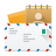
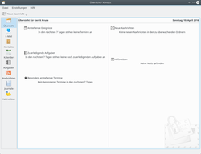

Kontact
Dieser Artikel wurde für die folgenden Ubuntu-Versionen getestet:
Ubuntu 16.04 Xenial Xerus
Ubuntu 14.04 Trusty Tahr
Zum Verständnis dieses Artikels sind folgende Seiten hilfreich:

Kontact  entstand aus der Überlegung heraus, dass es in KDE bis dahin keinen Groupware-Client gab. Da aber bereits viele Einzelprogramme zur Verfügung standen, die zusammen alle benötigten Funktionen für einen Groupware-Client bereit stellten, entschied man sich, diese in einem Programm zu bündeln. Das Ergebnis ist ein perfekt in den KDE-Desktop integrierter Groupware-Client.
entstand aus der Überlegung heraus, dass es in KDE bis dahin keinen Groupware-Client gab. Da aber bereits viele Einzelprogramme zur Verfügung standen, die zusammen alle benötigten Funktionen für einen Groupware-Client bereit stellten, entschied man sich, diese in einem Programm zu bündeln. Das Ergebnis ist ein perfekt in den KDE-Desktop integrierter Groupware-Client.
Kontact ist keine Anwendung im eigentlichen Sinne, sondern eine Zusammenführung von mehreren eigenständigen KDE-Programmen. Das bedeutet, alle Einzelapplikationen können auch als eigenständige Programme aufgerufen, konfiguriert und genutzt werden, Kontact bietet nur das "Gerüst" zur Verwaltung und Integration zu einer Einheit.
Integrierte Anwendungen¶
|  |
| Kontact |
Momentan fasst Kontact folgende Programme zusammen, die alle optional installiert werden können:
KAddressBook - Kontaktverwaltung
KJots - Notizbuchverwaltung / Nur bis KDE SC 4 (Kubuntu 14.04) Bestandteil von Kontact
KMail - E-Mail-Client
KNode - Usenet-Newsreader / Nur bis KDE SC 4 (Kubuntu 14.04) Bestandteil von Kontact
KNotes - Notizzettel für den Desktop
KOrganizer - Kalender mit Aufgaben-, Merkzettel- und Tagebuchfunktion
Installation¶
In einer Kubuntu Standardinstallation ist Kontact bereits enthalten, ansonsten muss folgendes Paket installiert [1] werden:
kontact
 mit apturl
mit apturl
Paketliste zum Kopieren:
sudo apt-get install kontact
sudo aptitude install kontact
Um einzelne Programme hinzuzufügen installiert man eines der folgenden Pakete:
akregator
kaddressbook
kjots
kmail
knode
knotes
korganizer
ktimetracker
mit apturl
Paketliste zum Kopieren:
sudo apt-get install akregator kaddressbook kjots kmail knode knotes korganizer ktimetracker
sudo aptitude install akregator kaddressbook kjots kmail knode knotes korganizer ktimetracker
Kontact findet man anschließend im K-Menü unter "Programme -> Büroprogramme".
Um Kontact in deutscher Sprache nutzen zu können, müssen folgende Sprachpakete installiert sein:
kde-l10n-de
language-pack-kde-de
language-pack-kde-de-base
mit apturl
Paketliste zum Kopieren:
sudo apt-get install kde-l10n-de language-pack-kde-de language-pack-kde-de-base
sudo aptitude install kde-l10n-de language-pack-kde-de language-pack-kde-de-base
Benutzung¶
Beim ersten Programmaufruf öffnet sich der Einrichtungsassistent, andernfalls standardmäßig die Übersicht. Auf der linken Seite des Programmfensters befinden sich Schaltflächen zu den verfügbaren Programmen. Die Benutzung der einzelnen verfügbaren Applikation ist im jeweiligen dazugehörigen Artikel (Links siehe oben) zu finden.

Konfiguration¶
Übersicht einrichten¶
Unter "Einstellungen → Kontact einrichten → Übersicht" kann man durch an- bzw. abhaken installierte Komponenten ein- bzw. ausblenden, sowie die innerhalb der Module angezeigten Informationen einrichten.
Links¶
Projektseite von Kontact Mobile
 - Bisher unterstützt: Maemo 5 (Nokia N900), Win CE 6.5 (HTC Touch Pro 2)
- Bisher unterstützt: Maemo 5 (Nokia N900), Win CE 6.5 (HTC Touch Pro 2)
- Erstellt mit Inyoka
-
 2004 – 2017 ubuntuusers.de • Einige Rechte vorbehalten
2004 – 2017 ubuntuusers.de • Einige Rechte vorbehalten
Lizenz • Kontakt • Datenschutz • Impressum • Serverstatus -
Serverhousing gespendet von